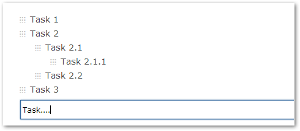

There is a special mode of task-creation in Gemini that is particularly suited to rapid planning sessions where you want to capture a hierarchical list of tasks to be done, as quickly and as simply as possible, and then flesh out the detail later if necessary.
You will want to first ensure that the Quick Entry app is associated to the correct projects desired. Please navigate to Customize > Apps > Quick Entry. From here, select the projects you wish to enable the Quick Entry app for. From this screen you may specify which user groups can view and create items using the Quick Entry app - this gives you complete control over the app. Once you have made the desired changes click "Save".
Enabling Quick Entry for a workspace is simple. Select the workspace you wish to enable the Quick Entry app for. Select Workspace Details from the Workspace menu cog. Under the Workspace tab make sure Quick Entry is checked and you'll then find it in the menu.
Once enabled, Quick Entry is to be found in the menu list.If you can't see it, it is usually because you are not in a Workspace in which it has been enabled.
Enter your tasks in the list and press enter to get Gemini to create a new line.
If the task that you are creating is a sub-task of the task above it, tab to indent it. When you create sub-tasks tasks Gemini automatically creates a dependency link and a parent/child relationship for you.
You can continue to indent tasks and there is no practical limit to the level of nesting.

To "outdent", simply hold down the shift key when you tab. See other keyboard shortcuts below:
Each Task that is created has grab handles and you can drag and drop your task hierarchy to reorder it. When you select a task to drag, Gemini automatically selects its children so you can drag complete chunks of the hierarchy around to fit whatever order you require.
When you are satisfied with your tasks and their order, click "Add" and Gemini will create all of the tasks for you using the defaults set for the Project.